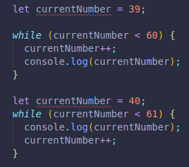
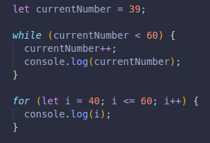
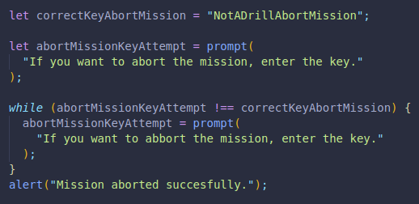
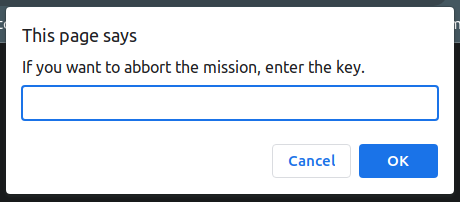
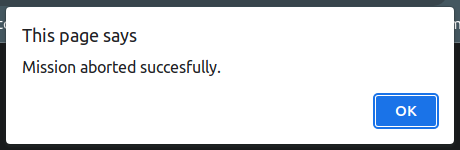

While loops will run as long as our conditions are true.
We need to make sure we enter a condition that allows the loop to end eventually, or we will have an infinite loop.
This condition is entered inside the curly brackets, not the parenthesis like with for loops.
The order in which we place that condition and the output is important, it can change the starting and ending point. Everything in between would stay the same.
Here is an example, they both do the same thing, but a few tweaks are needed for that to happen.
They will both print: 40,41,42,43,44,45,46,47,48,49,50,51,52,53,54,55,56,57,58,59,60
We can do the same with a for loop too.
While loops are mostly not used in this way, for loops are more common.
We use them in code where we don´t actually know what is going to happen.
Like in a game, we can have a while loop run as long as a variable is not true.
while(!gameOver){
player1Turn;
player2Turn;
}
We do not define a number of times for it to run!
Here we have an example, this code will keep running until we enter the correct key.
If the guess is incorrect, it will prompt the user again, as many times as needed.
Only once we enter the exact key, we will get a response alert informing us the guess was succesful.
 